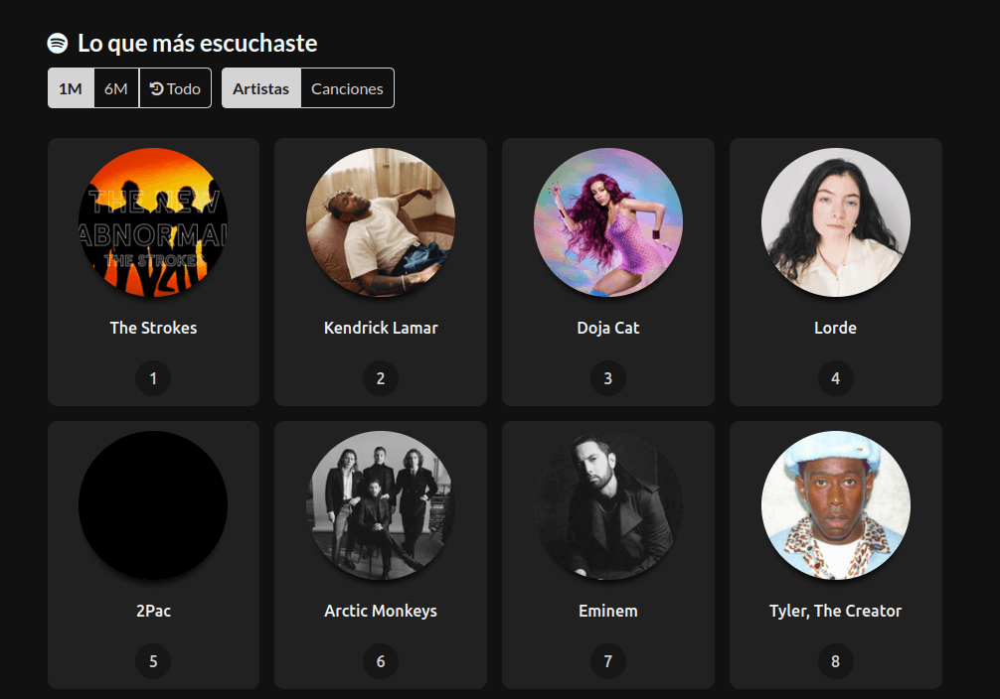

EVIDENCIA DEL DESINTERES

Evidencia 1

Evidencia 2

Evidencia 3

Evidencia 4
PULSO POLITICO POR PROVINCIAS EN ECUADOR
CASO 2
El análisis referente al pulso político por provincias contiene datos como Tweets por Provincias, Formación Institucional, Hashtags usados y candidatos a la presidencia. Entre los gráficos utilizados, considero que el uso de las gráficas circulares para los tweets y los
candidatos es muy acertado, ya que da una apreciación de los datos claros, demostrando de forma simple pero efectiva la cantidad de aprecio y tweets dados referentes a los partidos políticos y sus representantes. Otra de estas gráficas usadas en el análisis es la de
barras, la cual demuestra de forma efectiva el nivel de estudio de los participantes en eventos políticos, lo que es de gran ayuda para realizar análisis críticos sobre la situación del país en el ámbito académico. Por último, el gráfico de nube de palabras es menos efectivo, dado que ingresa
palabras que no están referenciadas al tema general, se infiltran temas diferentes y la precisión de datos necesarios puede llegar a bajar.
DATOS DE INTERÉS

FORMACION INSTITUCIONAL

NUBE DE PALABRAS

POPULARIDAD RAFAEL CORREA
EVENTOS O NOTICIAS MUNDIALES
CASO 3
En el análisis de eventos mundiales, nos centramos en el impacto del COVID-19, utilizando datos como muertes confirmadas, contagios y contaminación global. Utilizamos diferentes gráficas, como la de pastel, que muestra
la contaminación por semana en cada continente de manera clara, lo que nos muestra el fuerte impacto que dio la pandemia a la sociedad que no estaba preparada para un suceso a tal escala. Sin embargo, algunos gráficos,
como los mapas mundiales, resultaron confusos y poco útiles. Además, una tabla de muertes confirmadas no fue fácil de entender debido a la forma en que se presentaron los títulos de las sumatorias de los datos, por lo
que no se puede comprender los datos mostrados, lo que complica el análisis de cualquier tipo. Se concluye que es importante comprender el uso de cada tipo de gráfico para poder utilizarlos en análisis críticos y precisos
de información sensible como la de este tema.
NOTICIAS DE INTERES

Variantes del COVID-19

Muertes Mundiales

contaminacion

Contagios Mundiales
ARTISTAS MAS ESCUCHADOS DE SPOTIFY
CASO 4
El tema de los artistas más escuchados en Spotify es extenso debido a la gran variedad de grupos y músicos. Aunque algunos no son populares en ciertos países o continentes, pueden ser famosos en otros lugares o en su propio país de origen. Para analizar este tema, se utilizaron diferentes tipos de gráficos que pueden representar grandes cantidades de datos. Se examinaron subtemas como los artistas más escuchados mensualmente, el número de reproducciones a nivel mundial, los artistas con mayor número de reproducciones en diferentes países y los artistas dentro de una lista de reproducción de Billboard. Entre los diferentes tipos de gráficos utilizados, se incluyó un gráfico de pastel, que aunque puede ser útil, no es el más adecuado para esta ocasión, ya que la gran cantidad de datos no se muestra de manera efectiva. Sería mejor utilizar un gráfico de barras, como se hizo para mostrar el número de reproducciones de los últimos meses. También se utilizó un mapa mundial, el cual resultó sorprendentemente útil, ya que mediante puntos indicó qué artistas fueron los más escuchados y cuántos seguidores tenían. Por último, se empleó un gráfico de cascada, cuya utilidad o representación no se logra comprender claramente. Posiblemente, un gráfico de barras agrupadas o de barras y líneas habría mostrado la información de manera más efectiva.

CANTANTES Y BANDAS DE INTERES

Cantante de USA mas Escuchado

Twenty one pilots

Mayor reproducciones en BildBoard

Menor reproducciones en BildBoard
JUEGOS EN LINEA POR PAISES
CASO 5
Para el último caso de estudio se escogió el análisis de los videojuegos en línea por países. Para ello, se utilizaron datos como empresas, países, categorías y ventas por consolas. En este
análisis se emplearon gráficos conocidos y comunes. Para el primer gráfico, el uso de un gráfico de pastel fue inteligente, ya que, a pesar de la gran cantidad de países, se muestra de forma
comprensible aquellos que tienen un mayor número de unidades de videojuegos. El tamaño del país y su cultura en videojuegos son esenciales, ya que a mayor población de un país, hay una mayor
probabilidad de exportación de videojuegos. Sin embargo, con las empresas es diferente. La competencia entre ellas hace que sus ventas sean muy equilibradas en ocasiones, o que no se logre
apreciar la gran cantidad de empresas al utilizar gráficas de pastel. Por ello, es mejor representarlas con un gráfico de barras lineal, lo cual nos ayudará a apreciar la cantidad de empresas,
y con la línea se demostrará claramente la diferencia entre las ventas. En cuanto a las categorías de videojuegos, fue acertado el uso de un gráfico de pastel, ya que, a pesar de la existencia
de muchas categorías, solo se muestran las esenciales o mejor dicho, las que se ven comúnmente repetidas en varias obras. Por último, la venta de las diferentes consolas se muestra con un gráfico
de línea, lo cual es correcto, ya que apreciamos la diferencia entre las distintas consolas existentes, lo que nos ayuda en los análisis críticos.
JUEGOS, CONSOLAS Y EMPRESAS DE INTERES

Consola mas vendida

Categoria mas Vendida

Empresa con mas Ventas